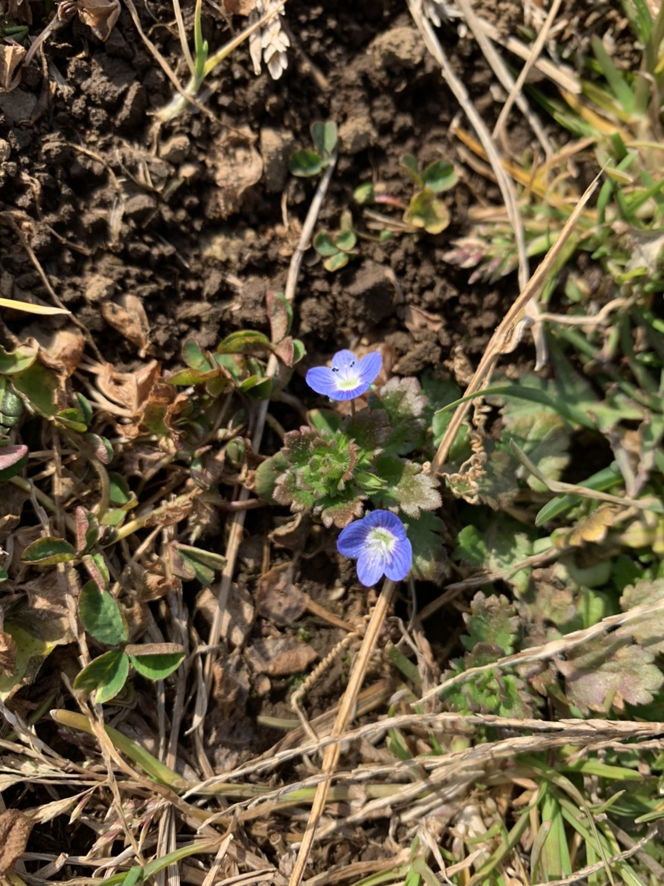
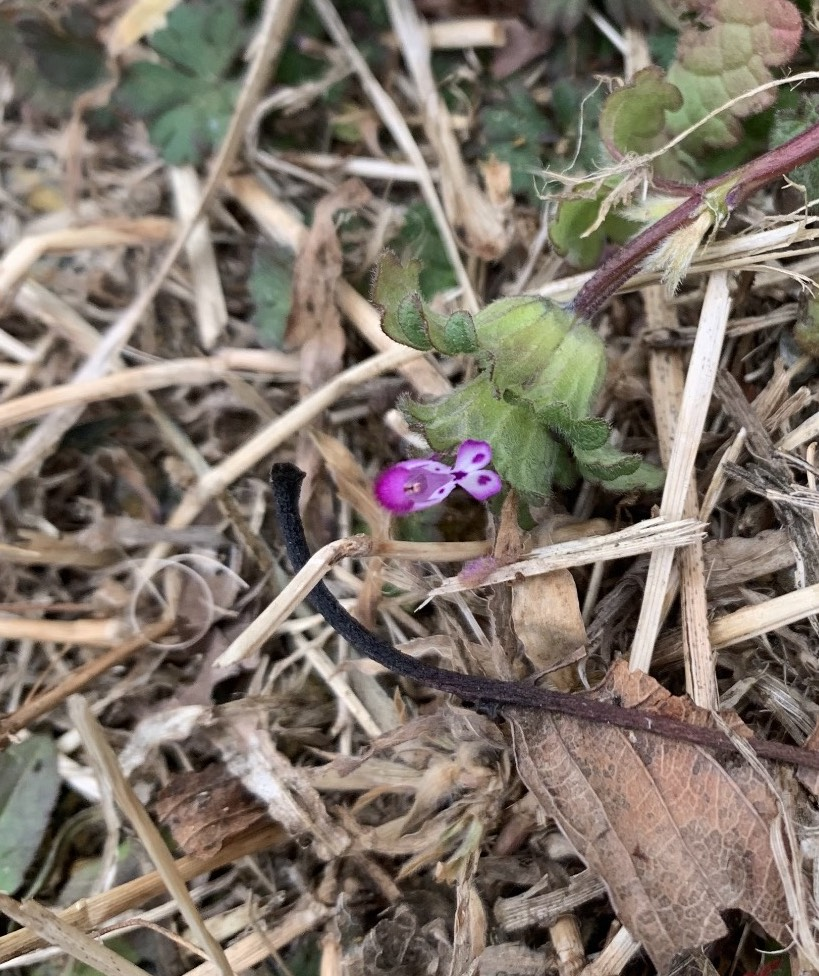

オンライン駒場祭に参加しました
2021.01.29 まるやま
【2020年オンライン駒場祭に参加しました】
牧歌的、ゆっくりした時間、穏やかな自然…
この物語は、静寂な自然をどこまでも愛しながらも通学電車でビルの隙間に都会の闇を見出すことでおなじみだった農学徒の丸山がお送りします。
ーーー
さて、今回は2020年の駒場祭（東大の文化祭）を振り返ります。
こちらは事前に流した告知文です。
ーーーーー
農学生命科学研究科修士課程の学生による、農学分野の研究紹介です。併せて東大農学部や団体の紹介も行います。
日時：2020/11/22（日）、11/23(月)の14:00〜15:00 ※どちらも同じ内容です
14:00 東大農学部＆Agrlienの紹介
14:10 農学研究紹介?
「散歩が楽しくなる話〜雑草をテーマにした農学研究をご紹介」
14:30 休憩＆Agrlienの活動紹介
14:40 農学研究紹介?
「有機農業を科学する〜土−微生物−作物間ネットワークの可視化に向けた研究」
15:00 Closed
ーーーーー
未来の教科書に載るであろうウイルス禍に見舞われた2020年。
東大からサークル活動自粛の通達が届き、東京大学Agrlienは農作業すらままならない日々が続きました。
代わりに行っているのが、オンラインでの農学勉強会やミーティングです。「東大農学部生コミュニティ※自称」である東京大学Agrlienでは、様々な専門分野を持つ学生が農学を自由に語り合う場の維持に努めてきました。
その延長で参加したのが、初のオンライン開催となる駒場祭でした。
農学の研究を語りたい！面白いと思ってもらいたい！
そんな大学院生の有志が集い、農学分野の最先端の研究を紹介する会を開くことにしました。
聞きに来てくださった皆様、ありがとうございました。
ところで、私は雑草の研究紹介をした者です。
なかなか外出もできない昨今、道端の雑草の季節の移り変わりを楽しむ生活を送っています。そろそろ俳句が詠めそうです。
皆さんは雑草と聞いて何を思い浮かべるでしょうか？
農地でも渋谷でもあつ森でも、探せばどこかしらに生えている雑草。
ーーーもし、雑草を愛すことができたなら…どこまでも追いかけてくる月に恋をするように、私は世界(Whole world)を愛せるのではないか？
…現実世界の私は、雑草の名前を確認しながら農作業で取り除く歪んだ愛情を注いでいます。
雑草の研究も行っているので、近いうちに研究成果を発表できればと思います。
ウイルス禍で、道端の雑草に目が行く機会が増えた方も多いのではないでしょうか。海外では#MoreThanWeeds というハッシュタグで雑草を紹介する活動がTwitterで生まれています。
雑草と芸術のコラボも今後期待が高まるところです。
ここからは、完全に脱線して最近の私のお気に入りの雑草の写真です。

サファイヤみっけ！（オオイヌノフグリ）

ホトケノザ 私飛び込む 蜜の中
○東京大学Agrlienとは？
「2017年に東京大学の農学部と大学院生が中心となり発足した農業系公認学生団体。”食の力で、うまいがつながる未来を。”を理念に弥生キャンパスや小田原を耕し、マルシェや飲食店での販売を通して生産と消費をつなぐ」学生団体です。
東京大学Agrlienを支えてくださっている皆様、いつもありがとうございます。今年もよろしくお願い致します。
お読みくださりありがとうございました！
※本ブログの内容は個人的な意見であり、いかなる所属の見解を示しているものではありません。
※文章、画像の無断転載・無断使用を禁じます。